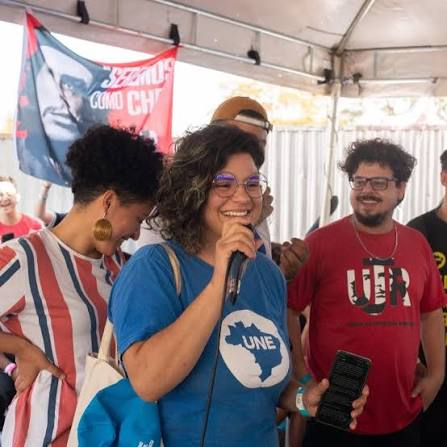

Jovens que as Armas da PM Assassinaram!
vidas que foram tirada pelo o poder de estado que deveria proteger o povo
- Quem foi:
- Sarah era militante e dirigente da União da Juventude Rebelião (UJR), organização a qual dedicou seus melhores anos e toda sua alegria de vida, tornando-se uma das principais lideranças estudantis de Porto Alegre. Estudante de Arquitetura, foi coordenadora do Movimento Correnteza, diretora da União Nacional dos Estudantes (UNE), do Diretório Central dos Estaduantes da UFRGS, do Diretório Acadêmico da Arquitetura e membro do Conselho Universitário da UFRGS.
- Seu Assassinato:
- Sarah morta em janeiro enquanto realizava uma pesquisa do trabalho de conclusão de curso em Porto Alegre. Além da jovem, o dono de um mercado, Valdir dos Santos Pereira, de 53 anos, também foi morto no ataque
